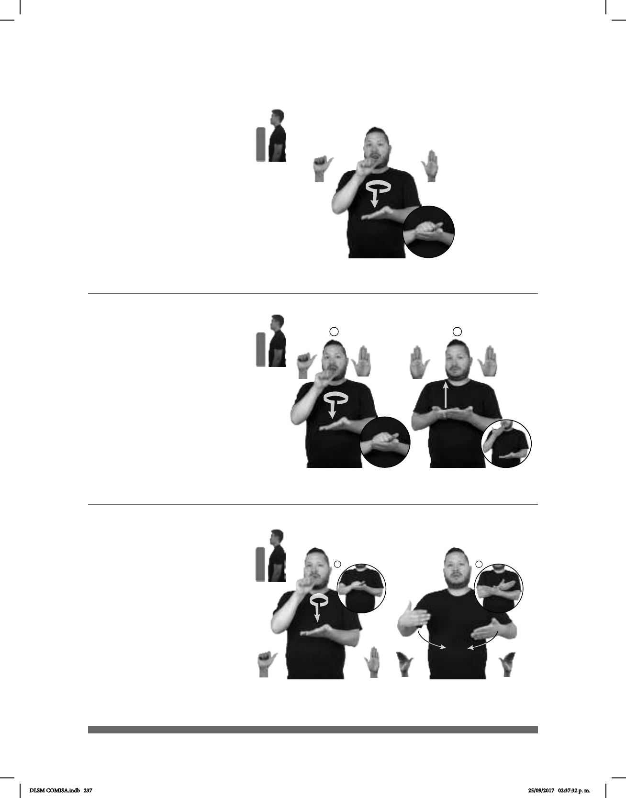

237
Acta (A-13)
1
2
(A-14)
pos-MI AMIGO dm-JULIO TENER ACTA-DEMANDA
Mi amigo Julio tiene un acta de demanda.
DELEGACIÓN pro-YO YA IR ACTA LEVANTAR
Yo fui a levantar un acta a la delegación.
1
2
(A-15)
pos-MI MAMÁ pos-SU ACTA-NACIMIENTO yo-DAR-a-ti.
Te doy el acta de nacimiento de mi mamá.
Seña: SC: I. y II. SB
I. MD A.1, MB B-P.2; II.
MD y MB B-P.2
I. MD palma hacia abajo. MB
palma hacia arriba; II. Palmas hacia arriba.
I. A la altura del pecho. MD
sobre MB; II. MD inicia sobre MB y
termina la altura de la barbilla. MB a la
altura del pecho.
I. MD se mueve formando un
círculo y después golpea a la MB en línea
recta; II. MD recto.
Simula la acción de sellar
un documento.
sust. f. Relación escrita de
hechos que producen consecuencias
jurídicas inmediatas.
Seña: SB
MD A.1, MB B-P.2
MD palma hacia abajo. MB
palma hacia arriba.
A la altura del pecho. MD
sobre MB.
La MD se mueve formando
un círculo y después golpea a la MB en
línea recta.
Simula la acción de
sellar un documento
sust. f. Documento en que se
Seña: SC: I. SB; II. SS
I. MD A.1, MB B-P.2; II.
B-P.7
I. MD palma hacia abajo. MB
palma hacia arriba; II. Palmas hacia arriba.
I. A la altura del pecho. MD
sobre MB; II. A la altura del pecho de los
lados al centro.
I. MD se mueve formando
un círculo y después golpea a la MB en
línea recta; II. Las manos se cruzan hacia el
centro y llegan a un punto cercano.
Simula la acción de sellar
un documento y cargar a un bebé.
sust. f. Documento en que se
DLSM COMISA.indb 237 25/09/2017 02:37:32 p. m.